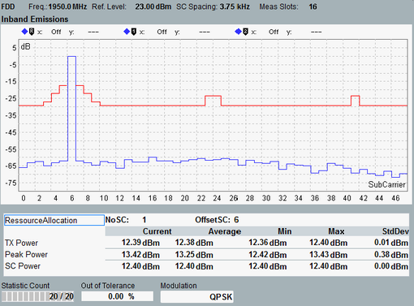

View Inband Emissions
The inband emissions are displayed in a diagram and as a table of statistical results.

Inband Emissions view
The diagram shows the average power in all subcarriers of the measured slot. So it shows a power vs. frequency representation. The powers are normalized to the current SC power.
The figure shows that SC number 6 is allocated. The power of the remaining, non-allocated subcarriers must be below the red limit line.
The inband emissions are calculated from the I/Q origin offset-corrected signal.
For details about the table results, see "View TX Measurement".
For the parameters at the bottom, see "Common View Elements".
For query of the diagram contents via remote control, see "Inband Emission Results".